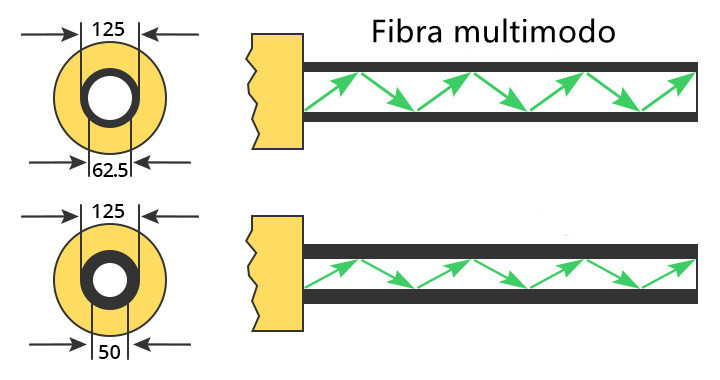

CARACTERÍSTICAS
- Diametro del Núcleo: Más grande en comparación con la fibra monomodo, típicamente 50 o 62.5 micrómetros.
- Índice de Refracción: Variabilidad en los modos de propagación de la luz.
- Distancia de Transmisión: Distancias más cortas en comparación con la fibra monomodo, generalmente hasta varios cientos de metros.
- Atenuación: Mayor atenuación que la fibra monomodo, mayor pérdida de señal durante la transmisión a largas distancias.
- Velocidad de Transmisión: Menor velocidad de transmisión de datos en comparación con la fibra monomodo.
- Aplicaciones: Utilizada en distancias más cortas, como en redes locales (LAN) y enlaces de corta distancia.
- Costo: Generalmente más económica de implementar en comparación con la fibra monomodo.
- Conectores: Utiliza conectores más grandes y menos costosos, como el conector ST o SC.